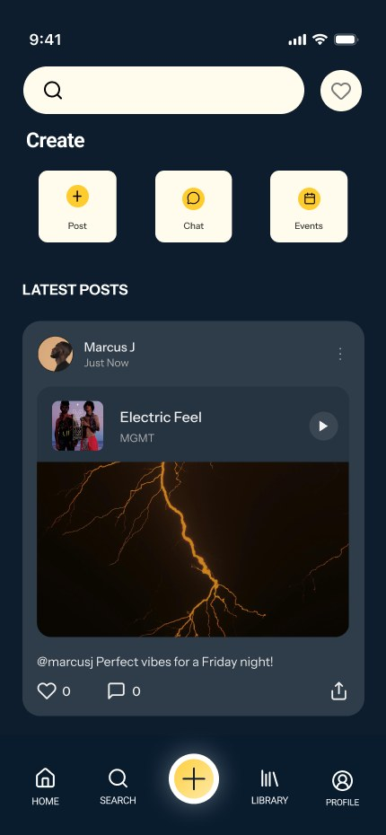

← All work / Audiva
Audiva
Music that matches how you feel
Users pick a mood such as Happy, Relax, Focus or Energize, and Audiva curates music instantly. They can also post songs, build playlists and explore a social music feed.

Why does finding the right music take so long?
Music apps pile on recommendations, which makes navigation hard and distracting.
Adding, organizing and saving songs takes several steps, which lowers engagement.
Finding music that fits how you feel means digging through playlists and searches.
Listeners share music with friends through separate apps instead of where they listen.
Key insights
- 4 one‑on‑one interviews with music listeners aged 27–34
- Analyzed Spotify and Apple Music for usability gaps
- Card sorting to map mental models and navigation preferences
- Maze usability testing across core flows and navigation
- Users want recommendations based on mood, not genre or search
- Cluttered interfaces and excess recommendations cause decision fatigue
- Creating playlists and managing songs takes too many steps
- Users want social and sharing features inside the listening experience
Design thinking approach
User research, listening habits, market analysis
Personas, pain points, journey mapping
Information architecture, navigation, search
Wireframes, hi‑fi screens, prototype
Prototype testing, feedback, iterations
Who we designed for
Four personas built from our interviews.


What listeners feel, do, say and think
Frustrated by overwhelming interfaces and endless recommendations. Excited by the idea of mood‑based discovery.
Listens daily while working, studying and commuting. Digs through playlists for the right song. Shares music through other apps.
“I want music that matches my mood instantly.” “Current music apps feel too cluttered.” “Creating playlists takes too many steps.”
“Why can’t music apps understand how I feel?” “There should be a faster way to discover music.”
Design solution

Mood‑based discovery
Users choose a mood such as Focus, Relax, Happy or Workout and get a curated playlist for that state right away.

A simpler music experience
A clean interface helps users discover, play and save music in fewer steps.

Social music community
Users share songs, create posts, connect with other listeners and discover music through the community.
What 5 testers told us in Maze
Low-fidelity prototype test with 5 participants. Tasks: log in or sign up, pick a category, create a mood and post a song, then remove the song.
- Every tester found the create-post option
- Mood categories (Focus, Relax, Workout) scored highest
- 3 of 4 written answers said the app felt easy to use
- Adding or removing a song: 60% neutral, 40% easy
- Log-in ease was mixed, with one very low rating
- One tester was confused by the instructions
“App felt very easy to use, instructions were clear and nothing was confusing!” — Maze participant
What changed and why
Each row is a problem found in testing, the design change it led to and the result.
| Issue | Change | Result |
|---|---|---|
| Users felt overwhelmed by a cluttered home screen and too many recommendations | Simplified the home screen and made mood entry points the primary action | Faster discovery, less decision fatigue |
| Creating playlists and managing songs took several steps | Added quicker playlist actions and streamlined song management | Easier playlist management in testing |
| Navigation labels and account settings were unclear | Clearer labels, reorganized account settings, simpler logout | Smoother navigation in testing |
Impact and results
Every participant preferred mood‑based discovery and found relevant music with less searching.
Testing showed smoother navigation and easier playlist management.
75% described the experience as cleaner and more intuitive than their current app.
How users move through the app

From sketch to structure

Conclusion
Audiva makes music discovery more personal and emotionally relevant. Mood‑based recommendations, clear navigation and personalized listening help people find music that fits how they feel in the moment.
The project showed how focused UX can reduce decision fatigue, increase engagement and strengthen the connection between people and the content they love.